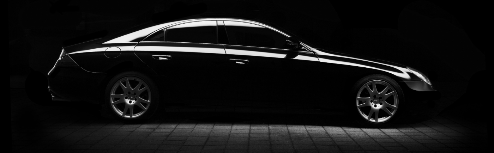
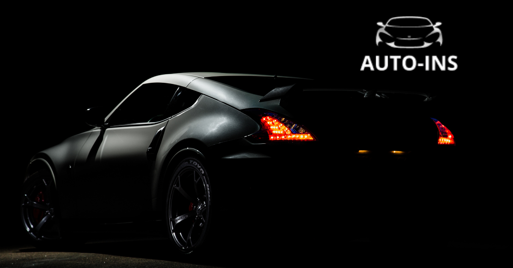

Перезакріплення індивідуальних номерних знаків: що потрібно знати перед зверненням до ТСЦ МВС

Індивідуальні номерні знаки (ІНЗ) давно стали способом підкреслити індивідуальність авто, створити впізнаваний стиль або передати особисте значення в унікальному написі. Але коли власнику потрібно передати такий знак іншій особі або «перевісити» його на інший автомобіль, виникає необхідність у перезакріпленні.
Ця процедура пов’язана зі зміною офіційних даних про транспортний засіб, тому виконується виключно особисто у територіальних сервісних центрах МВС.
auto ins, автоинс, аутоинс, ауто инс, autoins, автоинс, авто инс, автоінс, авто інс, ауто інс,
Що таке перезакріплення ІНЗ?
Перезакріплення індивідуального номерного знака — це офіційна процедура передачі вже виготовленого та зареєстрованого знака:
-
іншому власнику;
-
або іншому транспортному засобу того ж власника.
Для цього у ТСЦ МВС подається заява, проводиться перереєстрація авто та формується нове свідоцтво про реєстрацію, де вказується ІНЗ.
Необхідні документи
Для перезакріплення індивідуального номерного знака підготуйте:
-
свідоцтво про реєстрацію транспортного засобу;
-
паспорт або ID-картку;
-
письмову згоду власника ІНЗ (якщо передається іншій особі; інколи потрібне нотаріальне посвідчення).
Повний перелік документів розміщений на сайті Головного сервісного центру МВС.
Під час підготовки документів варто також подбати про безпеку та документи авто. Нагадуємо, що оформити ОСЦПВ онлайн сьогодні можна всього за кілька хвилин через наш сервіс, що значно спрощує процеси для власників авто.
Як скористатися послугою?
-
Підготуйте документи.
-
Оберіть зручний територіальний сервісний центр МВС.
-
За бажанням запишіться через сервіс Е-запис, щоб уникнути черг.
-
Подайте документи адміністратору.
-
Після перевірки та оформлення перереєстрації отримаєте нове свідоцтво про реєстрацію з відміткою про ІНЗ.
Після успішного перезакріплення знак офіційно буде прив’язано до нового авто чи власника.
Важливо пам’ятати
-
Використання індивідуального номерного знака, який не закріплений офіційно, може призвести до адміністративної відповідальності.
-
ІНЗ повинен відповідати регіону реєстрації транспортного засобу.
-
Рекомендується перевірити графік роботи ТСЦ та скористатися онлайн-записом, щоб зекономити час.
